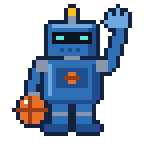

Loading slate…
Loading…
Loading record…
| Game | Proj | Mkt | Gap |
|---|
| Code | What it means | Effect |
|---|---|---|
| Reading the cards | ||
| Hit /10 | The badge on each tile: the engine's hit chance out of 10 (price plus edge), so 7.8 means about 78%. Tiles shade from grey (7) to dark green (8.5+); under 7 is a plain outlined tile. Checked on 4,172 settled rungs (13-20 Nov): it predicted 71.4% against 70.8% actual. Tap a bet for its last-10 count. | Display |
| Matchup edge bar | Bars grow out from the centre line toward the team with the better rank; length = rank gap (full = 29). Short grey stub both sides = 2 ranks or less, no real edge. In the defence table the bar grows toward the tighter defence. | Display |
| Bet type and stake | ||
| U1.5 · U1 · U0.5 · U0.25 | Stake in units for a pick, set by its stars: 5★ 1.5u, 4★ 1u, 3★ 0.5u, 2★ or less 0.25u. | Stake |
| LEAN / U0 | Lean: tracked at 0u and never staked. A near-miss, or one of the 0u test tiers below. | 0u |
| ★ stars | Confidence from the model's hit probability, minus one for a depleted team (3+ rotation players out) or a back-to-back, then capped by sample size. | Sets stake |
| STACK | This game has 4 or more picks, so they're correlated (one bad game can sink several). | Caution |
| QUIET | Lean from a quiet day (fewer than 4 games), which uses a looser lean test. | 0u |
| Why a lean isn't a pick | ||
| MISS | Would have been a pick, but the sample has a miss. Picks need a perfect sample (v3.19). | 0u |
| THIN | Perfect sample, but the edge is under 6.0pp (v3.21). | 0u |
| CUSH | Passed hit rate and edge, but the cushion (C) is over 0.70: the line sits too close to his average. | 0u |
| CAP | Passed, but the price is over the $1.85 cap. | 0u |
| (no tag) | A plain lean passed only the looser test (shrink m=20 instead of m=30). | 0u |
| 0u test tiers (own records) | ||
| HR80 | Hit-rate tier (from 20 Nov): perfect sample of 8+ games, cushion 0.70 or less, price $1.20-1.29. Target 80%+; verdict at 60 settled from 30+ team-games. | 0u test |
| HR85 | The earlier hit-rate tier (17-20 Nov), price $1.20-1.39. Replaced by HR80; its record is kept apart. | Closed |
| PIN | Pinnacle-anchor tier: a held book's alt rung at $1.20-3.00 paying 4pp+ over Pinnacle's fair price. Verdict at 100. | 0u test |
| MM90 | MM90 tier (from 22 Nov): $1.20-1.29 at the best held price, minutes-model P(over) 90%+. Verdict at 60 team-games. | 0u test |
| STAT0U | A rebounds or assists pick logged at 0u (from 23 Nov): our REB/AST picks and leans ran 8-23pp under their prices while points ran about level. Re-staked once REB/AST items get within 2pp of break-even over 30+ team-games. | 0u |
| REB-ANC | The opponent's top rebounder takes 17.8+ boards per 48 (top quarter). Display only: the books already price it. | Info |
| L5P | L5P tier (from 23 Nov): the highest best-held price at $1.50-1.99 that he went over in each of his last 5 games played (points, rebounds, assists). Verdict at 60 team-games. | 0u test |
| L5LOW23 | His lowest number in those last 5 games (always above the line). | Info |
| L5P-ALSO | This rung also meets the L5P rule (another tier or lean already has the line). | Info |
| MM90-ALSO | This rung also meets the MM90 rule (another tier already has the line). | Info |
| PMM0.93 | Minutes-model P(over) for MM90 items. The panel also shows the minutes-mixture figure when there is one. | Info |
| FO | FO tier (from 24 Nov): first night a rotation teammate (20+ min) is out, rebounds or assists, short rung at $1.20-1.34. Outside the lean cap. | 0u test |
| FO:Surname | First night without that teammate (20+ min). On points it is a tag only; on rebounds and assists it can make an FO item. | Info |
| RET1 | Would have been a pick, but it is the first night a key teammate is back, so it drops to a lean (v3.36). | 0u |
| RET1:Surname | First night back for that teammate: the usage he soaked up while out may go back to him. | Caution |
| AVOID | Verdict Avoid: this player and stat is on a teammate's first night back (RET1 window on). Shown as an Avoid pill on the tile. | Avoid |
| RET2:Surname | Nights 2-4 after that teammate came back (his first 1-3 games back). From v3.39, assists here drop to a 0u lean (see RET2-BLK). | Info |
| RET2-BLK | Assists on nights 2-4 of a rotation teammate's return: would have been a pick, drops to a 0u lean with Avoid (v3.39, window RET2-AST). | 0u |
| RU | Role up: his last-3 average minutes are at least 4 above his last-10 average. From v3.37 it blocks a pick (see RU-BLK). | Caution |
| RU-BLK | Would have been a pick, but his minutes just jumped (RU), so it drops to a 0u lean (v3.37). | 0u |
| WIN | WIN tier (from v3.38): an item inside a condition window the engine adds at 0u, such as points overs against a tough defence. Outside the lean cap. | 0u test |
| WIN:PTS-TOUGH | Which condition window the item sits in. Each one is listed in the Windows scorecard. | Info |
| WIN-BLK | Would have been a pick, but a blocking condition window applies, so it drops to a 0u lean (v3.38). | 0u |
| BK-ladbrokes | The book whose price is taken and settled, when it isn't Pointsbet. Every item takes the best price across Pointsbet, Ladbrokes and Sportsbet (from 22 Nov). | Info |
| OUTLIFT | Teammate-out tier: a key player with a key teammate freshly out; highest-priced rung at $1.20-1.59, at or under the main line. Killed 20 Nov (48 settled, −11.43u); no new items. | Closed |
| TM-OUT:SC1/REB1 | Which key teammate roles are out for OUTLIFT (roles are explained under Opponent and matchup). | Info |
| Late scratch: the player was ruled OUT after the run, so the item is struck through (books normally void it). | display | |
| LSR | Late-scratch re-run: a new item after a watched player was ruled OUT, or a player OUT at the run came back (from 23 Nov), 10+ min before tip and the game was re-run. Verdict at 40. | 0u test |
| LSR-PICK · LSR-LEAN · LSR-HR80 … | What the re-run item would have been (pick, lean, HR80, MM90, PIN or OUTLIFT). | Info |
| Sample and minutes | ||
| C0.82 | Cushion = line ÷ his average over the sample games. Lower is safer; picks need 0.70 or less. | Gate |
| Z1.00 | How many standard deviations his sample average sits above the line. Higher is safer; 9.99 means no spread at all. | Info |
| [n=3] | Only 3 games in the sample, so stars are capped at 3. | Stars cap |
| [Std?] | The standard line was inferred from the ladder with low confidence. | Caution |
| [OUT] | One outlier high game was dropped from the sample (median well below the mean). | Info |
| [MIN↑] / [MIN↓] | His minutes this season are 10%+ up / down on the prior sample, so the sample is scaled (limited to 0.80-1.25×). | Adjusts sample |
| MIN28→33 | Average minutes: prior sample → this season. | Info |
| [MIN?] | Under 2 games this season, so the minutes check couldn't run. | Caution |
| MT+ / MT- | Minutes trend: last-5 average is 1.5+ above / below the last-10 (7+ games played). | Info |
| DNP-LAST | He missed a team game in the last 3 days. | Caution |
| OT-ADJ | The sample has overtime games; their stats are scaled back to 48 minutes. | Adjusts sample |
| [ROLE?] | A top-3 teammate is out (TMO), so his role and the line may have shifted. Check it. | Caution |
| Team and teammates | ||
| TMO | A top-3 scoring teammate is OUT tonight. | Info |
| TMO-Q | A top-3 teammate is questionable. | Info |
| RET-ADJ | 3+ sample games lacked a key teammate who is back tonight; those games were scaled down. | Info |
| BIGEDGE? | Edge over the price is more than 10pp. Caution: big disagreements with the market lose. | Caution |
| RET | A top-3 teammate who missed 70%+ of the sample games is back tonight, so his usage may drop. | Caution |
| B2B | His team is on the second night of a back-to-back (minus one star). | Stars −1 |
| OPP-B2B | The opponent is on a back-to-back. | Display |
| DOG7 | His team is a 7+ point underdog. | Display |
| DEPL / DEPLETED | Older slates: his team had 3+ rotation players out. | Stars −1 |
| GTD | Older slates: game-time decision. | Caution |
| Opponent and matchup | ||
| MU+6% / MU-4% | Tonight's environment for this stat against league average (pace and what the opponent allows). Shown at 3%+ either way. | Display |
| OPP-OUT:SC1/REB1 | The opponent has key players freshly out. History: about +7% PTS for this side when any key player sits. | Display |
| REB-OPP | Rebounds bet while the opponent's top rebounder is freshly out. The market overreacts here: these alt rungs hit 41% against 55% needed. | Caution |
| Roles: SC1-3 · REB1 · AST1 | The team's top 3 scorers, top rebounder and top assister. | Info |
| Opp line | Opponent's rank for allowing this stat (1st most … 30th) and expected pace against league. | Info |
| Price and market | ||
| PIN+3.2 / PIN-1.5 | Pinnacle (the sharp book) agrees (+) or disagrees (−): our price against Pinnacle's fair price, in pp. | Display |
| MAIN-U+2.5 | A held book's main-line UNDER pays 2pp+ over Pinnacle-fair: the sharp line leans under while we bet over. | Caution |
| BEST-ladbrokes@1.62 | Another held book pays more for the same line. | Shop it |
| Safer: O6.5 @ 1.40 | A lower rung on the same player, for a safer price. | Info |
| Columns, context line and results | ||
| Hit | Sample hit rate at this line (k of n games). | |
| Edge | Model probability minus the price's implied probability, in pp. | |
| Context line | Minutes model %, with/without % (×lift), Pinnacle fair %, opponent outs, best book. Shadow numbers: they don't move the pick. | Display |
| W · L · PUSH · VOID | Settled result after the resolve, with the actual stat. VOID = did not play. | Result |
| ✅ Taken / 🚫 Passed | Your call on a pick or lean. Tap its tile, then Took it or Pass. Undo from the message that pops up, or from the tile. A pass locks at tip. | |
| Usual starter / Starting / Bench | Usual starter = started 4 or more of his team's last 5. Starting = in tonight's confirmed starting five (about 30 min before tip). Bench = lineups confirmed and he's not in them. | |
Settled = W or L; void and push are excluded. Units are flat 1u (win = odds − 1, loss = −1). Break-even = 100 ÷ mean odds. Gap = hit% minus break-even, in percentage points. CLV is measured only on picks with a captured closing price; picks with no close, or no newer price than the board they were picked from (same board), count as not covered. Windows are calendar days ending on the latest settled day, clipped at the season start. Band colours: blue < 1.55, orange 1.55–1.79, magenta 1.80+.
Not betting advice. Hit rate is not profit; prices move and players sit. Past results do not predict future ones. Only bet what you can afford to lose. If gambling is a problem for you or someone you know, contact your local support service (Australia: 1800 858 858, gamblinghelponline.org.au).